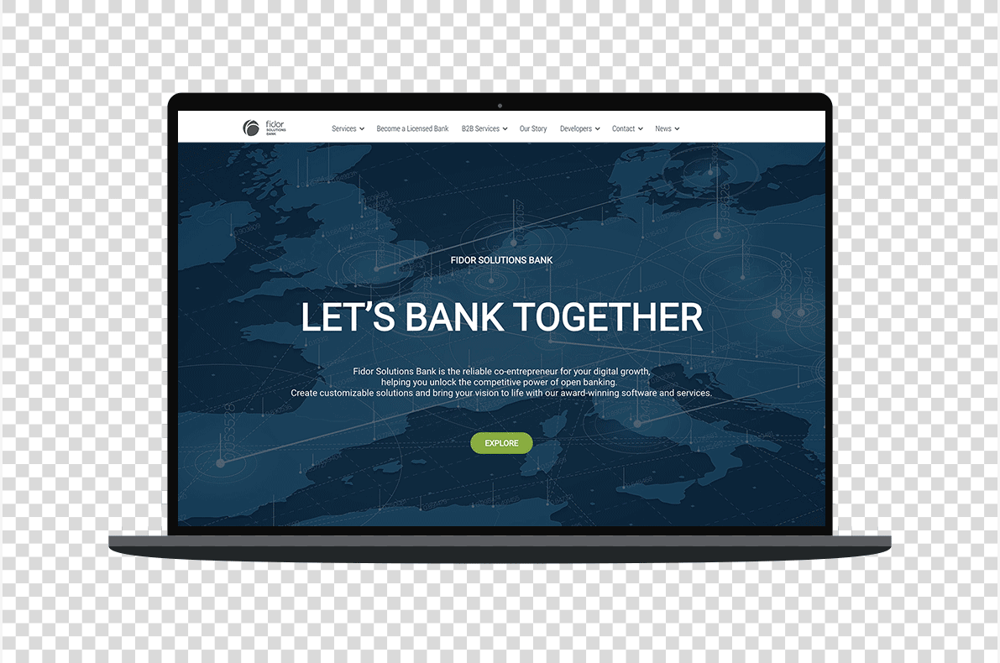
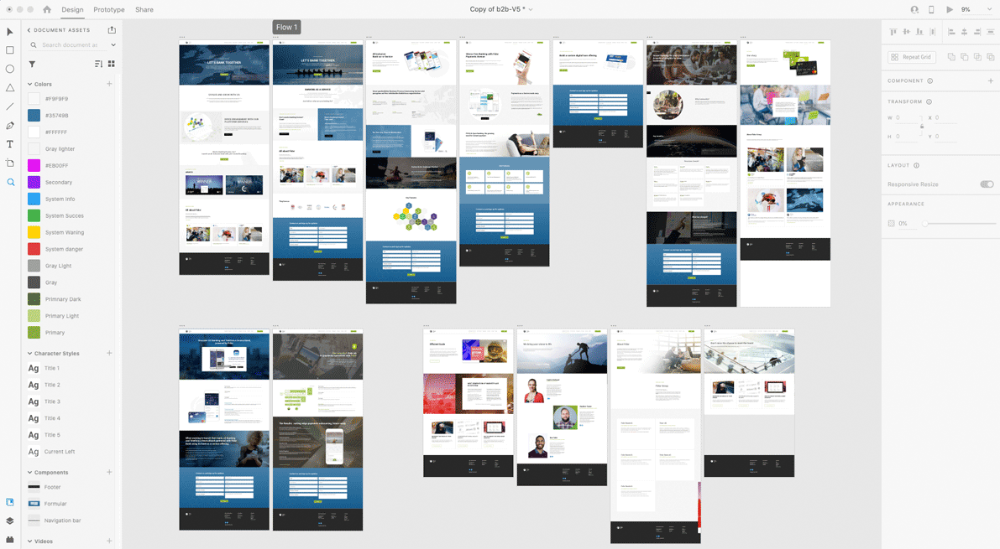
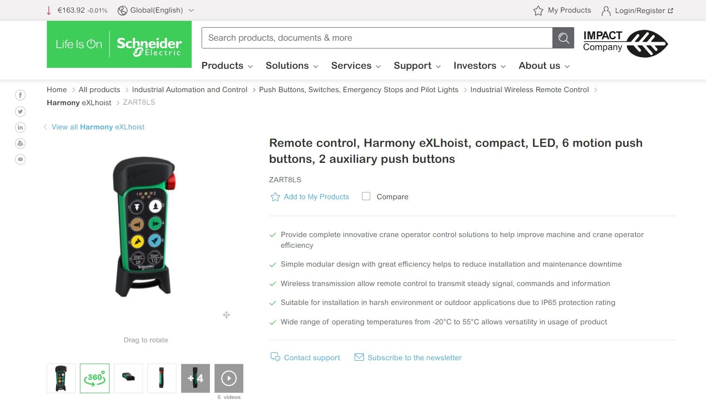
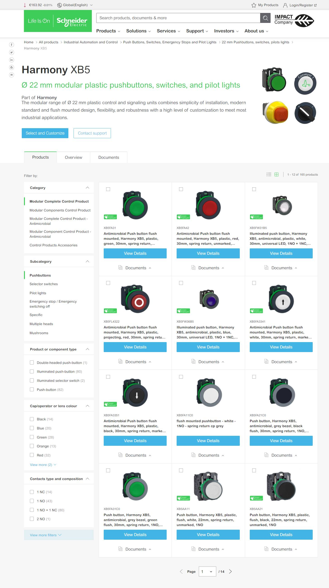
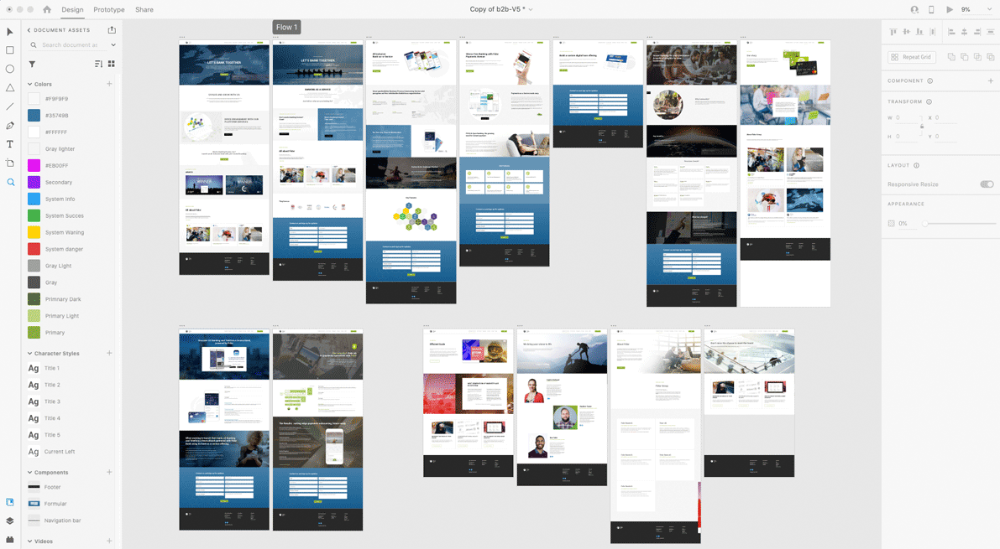
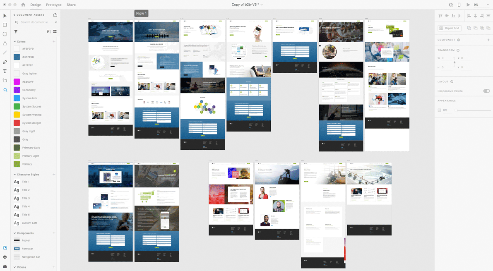
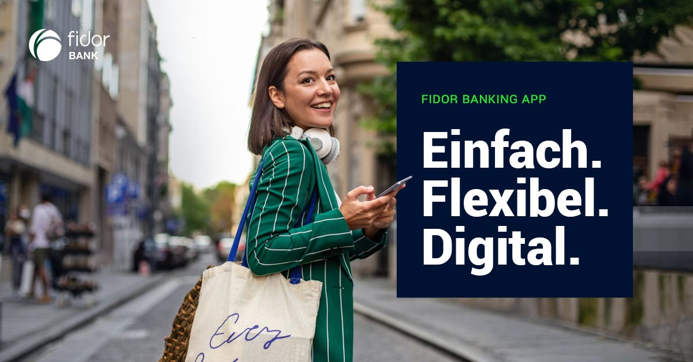
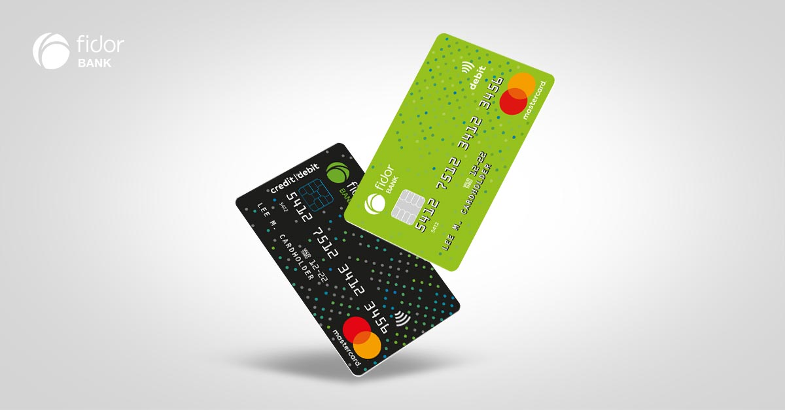
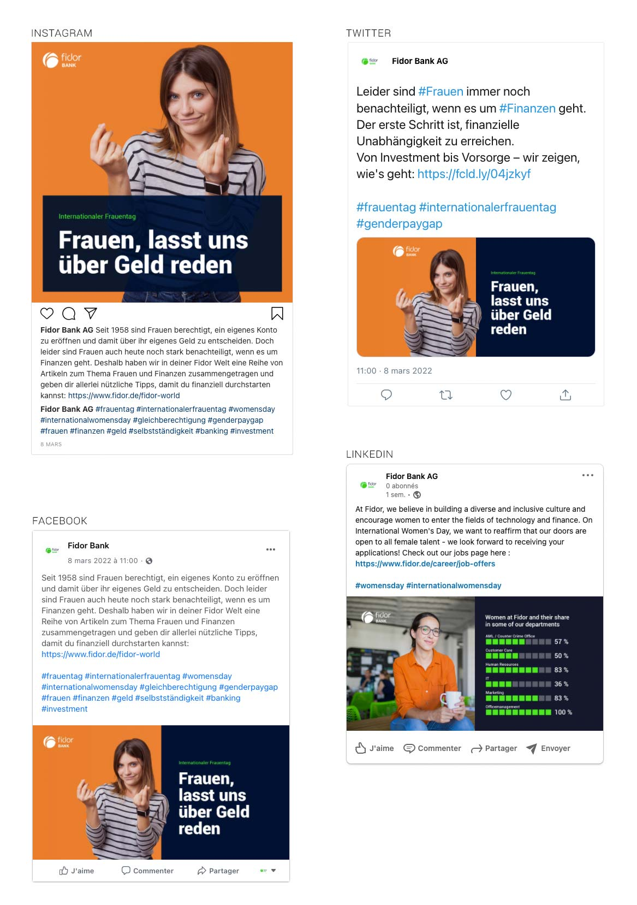

Fidor Solutions Bank is a leading provider of open digital banking services. It combines exceptional consulting expertise with cutting-edge technology to deliver highly customer-focused digital banking solutions worldwide.
The assignement
As a member of the Marketing and Content team, we were tasked with creating a B2B website from scratch within a tight deadline. Working closely with a writer and the IT specialist, we developed an appealing and responsive website tailored to our B2B clients' needs.


My process
Conduct meetings with stakeholders to understand their website requirements, including goals, target audience, budget, and deadline.
Create a sitemap and select SEO-friendly URLs.
Request the IT specialist to set up a local development environment of our CMS.
Analyze the existing design and structure of the company theme. Customize the theme's appearance, including colors, typography, and branding elements.
Create and implement the pages using the content provided by the writer, using the appropriate HTML syntax. Edit the CSS locally if needed.
Create forms and perform testing with the commercial team.
Select illustrative pictures, as well as create infographics.
Ensure the website design is responsive and mobile-friendly. Test the website across various browsers and devices.
Conduct thorough testing of the website's functionality, forms, links, and overall user experience.
Optimize the website's on-page SEO elements, including meta tags, headings, and keywords.
Present the completed website to the stakeholders for review. Gather their feedback and make necessary revisions or adjustments as per their requests.
Buy the pictures, compress the images and test the page load speed.
After the website goes live, ensure all links, forms, and functionalities are working correctly.
Provide maintenance assistance, including updates and troubleshooting. Scan for dead links and implement redirection if necessary.
Ready to make your life easier?
Add a versatile element to your team!
E-Commerce: Schneider Electric
About the company
Schneider Electric SE is a French multinational company that is a global leader in digital energy solutions and automation for energy efficiency and sustainability. With a presence in over 100 countries and employing more than 135,000 people, the company achieved a turnover of 27.2 billion euros in 2019.
The assignement
As a Production Manager, I was responsible for Digital Asset Management for the global market of the Industrial Line of Business.
Producing and uploading product pictures to the Digital Asset Management tool, including images of new product ranges or additions to existing ranges.
Filling in missing pictures in the worldwide database using various methods such as internet research, creating new images from scratch, or modifying similar products (with tens of thousands of affected references). As a last resort, recover photos taken in the group's factories and warehouses around the world.
Creating a workflow for new 360° views of products to be used by distributors.


Have you ever dreamed of a designer who knows about Excel?
Social Media:
Fidor Bank AG
About the company
Established in 2009, Fidor Bank is a pioneering digital bank based in Munich, Germany. Fidor Bank focuses on providing a fully digital banking experience to retail and SME customers in the DACH market (German-speaking Europe) and the UK. Additionally, the bank holds a strong market position in offering payment and transaction services to leading payment service providers and participants in the digital asset market.
The assignement
The assignment involved creating images and videos for social networks, including product promotion, partnerships, information on technical incidents, and promotion of blog articles.
Then I took on the role of administrator for the company's social media accounts. My responsibilities included planning and scheduling publications (with a minimum of one publication per week), creating sets of images or videos, writing texts in both German and English, managing publications using the Facelift tool, promoting content with Meta Business, and generating reports.
 

Social Media:
Fidor Bank AG
About the company
Established in 2009, Fidor Bank is a pioneering digital bank based in Munich, Germany. Fidor Bank focuses on providing a fully digital banking experience to retail and SME customers in the DACH market (German-speaking Europe) and the UK. Additionally, the bank holds a strong market position in offering payment and transaction services to leading payment service providers and participants in the digital asset market.
The assignement
The assignment involved creating images and videos for social networks, including product promotion, partnerships, information on technical incidents, and promotion of blog articles.
Then I took on the role of administrator for the company's social media accounts. My responsibilities included planning and scheduling publications (with a minimum of one publication per week), creating sets of images or videos, writing texts in both German and English, managing publications using the Facelift tool, promoting content with Meta Business, and generating reports.
Instagram – 1.7k followers
  Facebook – 26.1k followers
Twitter – 8.3k followers
Linkedin – 7.2k followers
Youtube – 1.8k followers
Hire a graphic designer who can make your brand shine!